AI 虚拟试衣大屏：让顾客 30 秒看到"自己穿这件"
商场门店的 AI 试衣大屏 + 手机端承接。核心不是"换脸"，而是把试衣间排队、脱穿成本、版型不确定这三个真实阻碍拿掉，并把结果变成一条可归因的到店转化链路。
一页产品方案
完整闭环（手机端站点已实现，可直接走完）
首页 → 分类/商品详情 → AI 虚拟试穿（站内入口，不是孤岛） → 试穿结果 → 加入购物车 → 结算（门店自提 / 快递 + 卡 / Apple Pay / 先享后付）→ 下单成功 → 我的订单（含取货码）→ 预约到店试衣 / 联系导购。
大屏负责"看到"，手机站点负责"买下"：大屏生成结果 → 扫码 → 手机端打开就是带着这件衣服的试穿结果页，用户不需要重新找商品。
换装模型已接入（可插拔）：页面里可切换「本地预览 / 自建换装服务 / fal.ai 托管模型」。自建服务只要 POST {human_image, garment_image, garment_description, body, seed} 并返回 image_base64 或 image_url；其中 human_image 就是按用户所选体型挑的数字模特——这就是"按体型生成"的落点。未配置或调用失败会自动回落本地预览，并保留三条兜底。交付目录自带 src/mock-model-server.js，可一键验证链路真的通。
目标用户
主：到店但不愿排队试衣的顾客（25–40 岁，决策快，怕麻烦，逛店时间碎片化）。痛点是试衣间排队、脱穿成本高、看实物想象不出上身效果。
次：陪同者与等候者——顺手玩一下，是天然的传播与停留时长来源。
B 端：门店导购——大屏是他们的"留客工具"，结果必须能被导购接手。
核心流程（大屏 ≤3 步 / ≤60 秒）
① 驻足即可开始（无注册、无输入，默认虚拟形象）
② 选一个和自己接近的身形
③ 选 1 件上装 + 1 件下装（或连衣裙 / 外套）
④ 生成中：可等待、可离场（扫码带走）
⑤ 结果页：搭配 + 尺码 + 现货 + 扫码
⑥ 手机端：详情、库存、预约试衣、加购、导购
全程零文字输入，每步只有一种动作（点卡片），候选 ≤6 个。
大屏与手机端分工
大屏 = 公共场景的"看到"：吸引驻足、快速出效果、不承载隐私与支付。
手机 = 私人场景的"决策"：留存、比价、尺码、库存、预约、支付。
桥接物是一个 一次性取件码 + 二维码（7 天有效，不填手机号也能用）；真正把"试穿"变成"可归因线索"的就是这一步。
等待与失败（本题最容易答漏的一环）
- 等待不空白：四阶段进度（读版型 → 贴合 → 渲染 → 出图）+ 剩余秒数 + 可取消。
- 等待可离场：生成中就把二维码放出来，结果直接推到手机，人不必站在屏幕前。
- 失败三级兜底：自动重试 1 次 → 云端失败就回落本地 AR 截图 → 再不行给静态搭配图 + 商品信息。绝不让人空手而归。
- 文案归因：把责任放在系统侧（"不是你的操作问题"），并强调"你的搭配已经帮你留着"。
隐私与合规
- 默认不采集人脸：默认用虚拟形象，不需要摄像头、不需要手机号。
- 真人试穿是显式可选项：单独授权弹层，画面仅本机处理、不上传、不训练，生成后丢弃原始帧。
- 自动清除：结果图 60 秒自动清除；无操作 90 秒清屏回首页（防止身后的人看到）。
- 一次性 token：取件码 7 天有效、不填手机号也能用；手机端一键删除。
- 出海合规：默认"不采集生物特征"这一条设计，本身就同时规避了 GDPR 第 9 条特殊类别数据与 CCPA/CPRA 的敏感信息义务；配 EN 优先双语、门店本地号码、区域化尺码（US/EU/UK/亚洲码对照）。
AI Native 的关键取舍（成本 / 延迟 / 能力边界）
| 环节 | 设计 | 为什么这么设计 |
|---|---|---|
| 双档渲染 | 本地实时 AR（0 秒 / 免费 / 看版型颜色）＋ 云端换装模型（约 18 秒 / 按次计费 / 照片级成图） | 把"等待与成本"的选择权交给用户：想快就快，想好看就等。门店高峰期不会被 GPU 排队拖死。 |
| 成本控制 | 同款 + 同体型的成品图缓存复用；每店每日生成上限；失败不计费、失败自动降级 | 单次换装模型的算力成本是这门生意最容易失控的一项；用缓存和降级把"每客成本"固定住。 |
| 能力边界 | 只做"服装贴合"，不做人脸识别、不认身份；对透明材质 / 复杂印花这类模型不稳定品类，只给静态搭配图 | 诚实的能力边界比虚假的高完成度更能保住体验与合规。 |
| 可评测 | 肩线/贴图偏移误差、生成 P95 时延、失败率与重试率、扫码率——每次换模型先跑回归 | AI 功能必须有可回归的指标，否则优化只能靠感觉。 |
| 降级链 | 云端换装失败 → 本地 AR 截图 → 静态搭配图 → 至少留下商品与库存信息 | 任何一环挂掉，用户都必须能拿到"下一步动作"。 |
转化路径与指标
链路
驻足 → 开始试穿 → 选形象 → 选服装 → 生成 → 看到效果 → 扫码带走 → 手机端看尺码与库存 → 加购 / 预约试衣 / 联系导购 → 到店成交。
关键动作全部埋点：start_fitting、pick_item、gen_start/success/fail、retry_gen、phone_open、add_to_cart、book_fitting。
看的指标
开始率、生成成功率、P95 生成时延、扫码率、手机端停留与加购率、预约试衣率、门店连带率、单次生成成本、失败后重试成功率。
线下最该盯的一个数：扫码率——它直接决定这块屏是"玩具"还是"线索入口"。
原型界面（可点击运行）

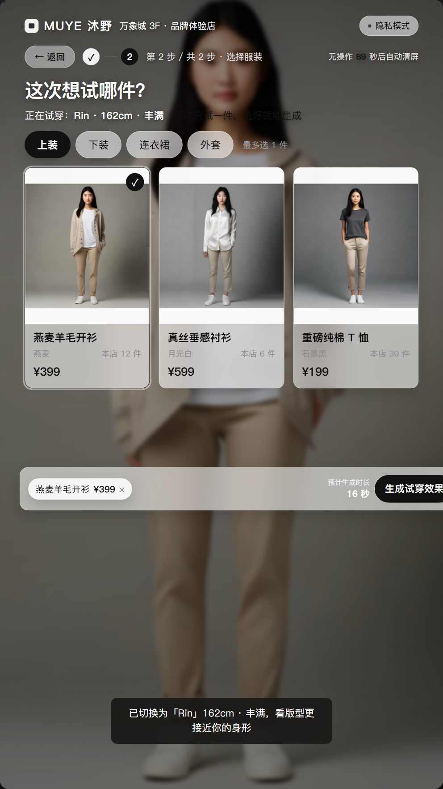
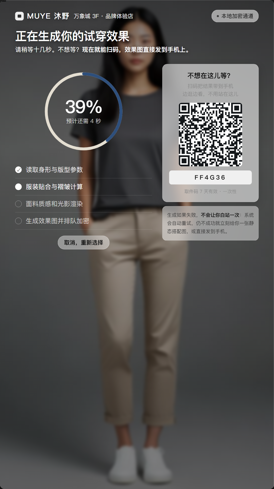
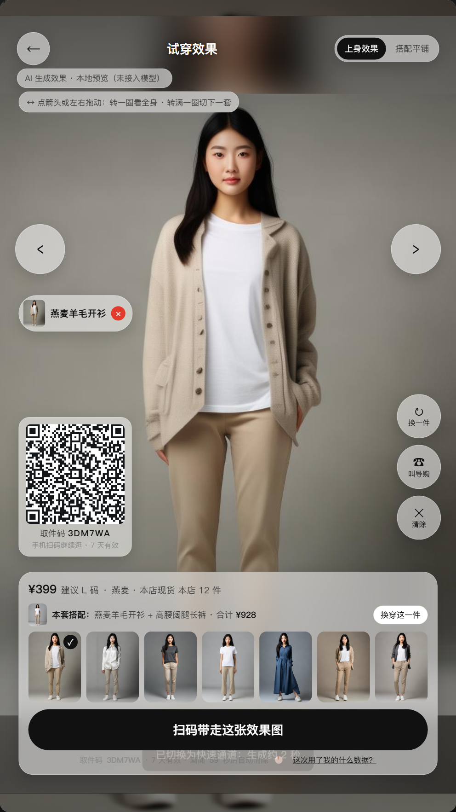
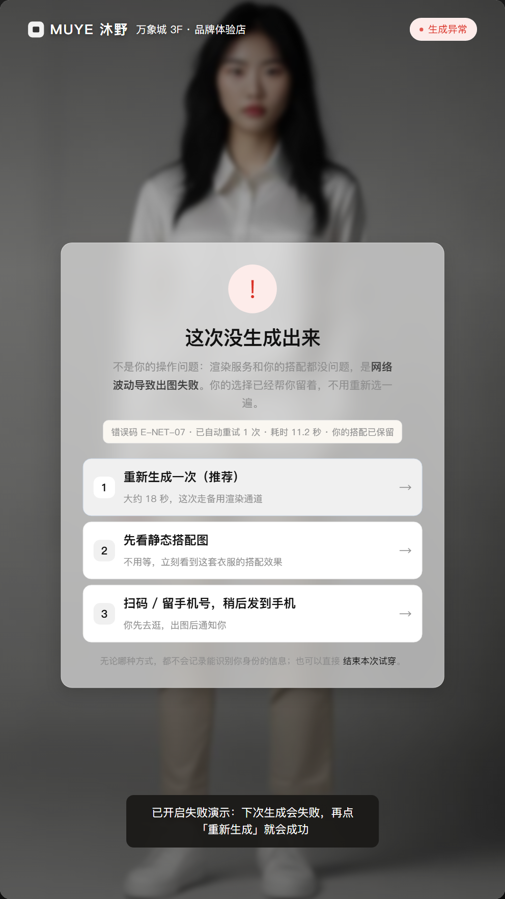
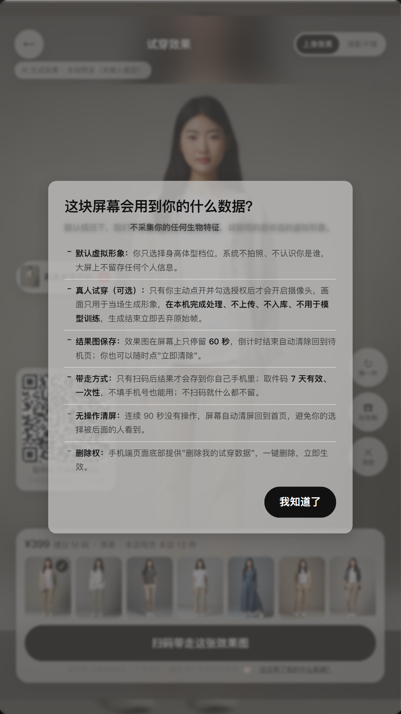
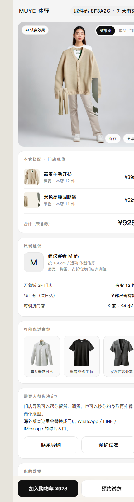
手机端完整商城流程（点击可走完）
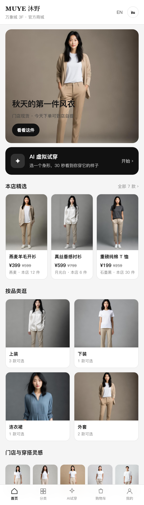
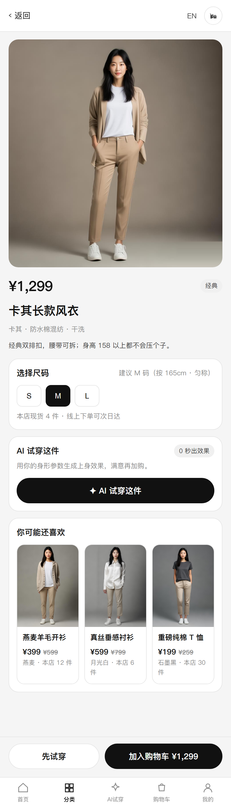
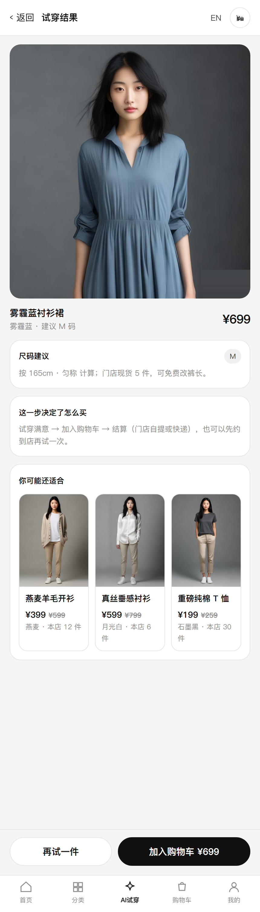
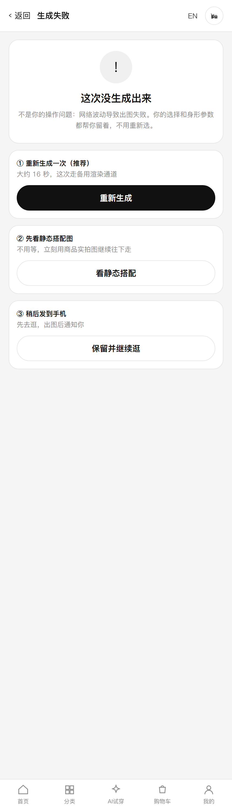
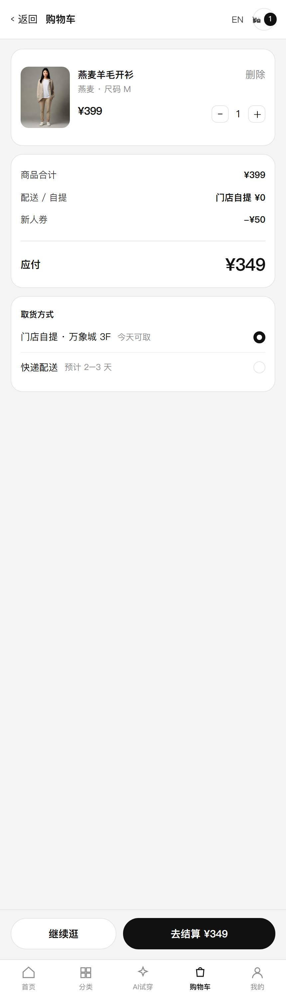
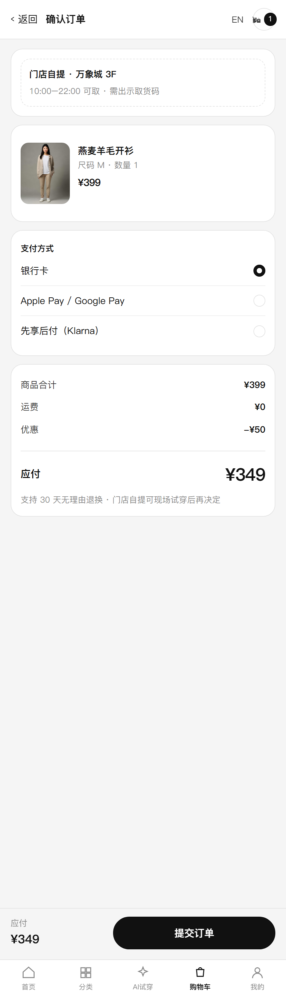
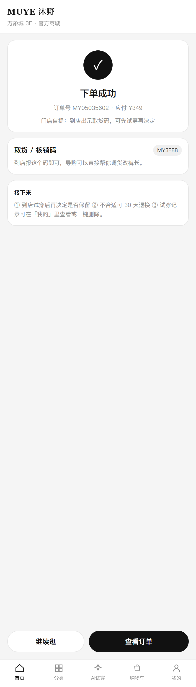
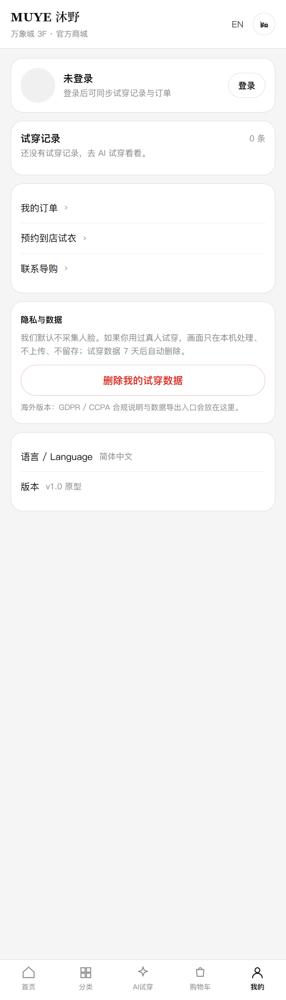
交付物与运行方式
交付物
- AI虚拟试衣-大屏原型.html：1080×1920 商场竖屏，含摄像头实时试衣镜。
- AI虚拟试衣-手机端原型.html：扫码后的承接页，支持
?code=&avatar=&items=参数。 - 一页产品方案.pdf 与 AI工具使用说明.md。
- src/：源码（渲染内核 / 交互状态机 / 摄像头模块 / 构建脚本）。
- assets/process/：生成并抠好的真人模特与真实服装素材。
运行
双击 启动原型.bat：会用 Node 起一个本地静态服务并自动打开浏览器。
为什么必须这样：浏览器规定 摄像头只能在 localhost 或 https 下打开，直接双击 HTML（file://）会被拦住。原型本身零依赖、无需安装任何包。
演示建议：大屏全屏（按 Esc 退出）→ 走完一单 → 用右侧「演示控制」逐个点失败、慢网络、自动清屏，再打开手机端。
AI 工具使用说明
用了什么工具
- Codex（GPT-5 类模型）：需求拆解、状态机与交互逻辑、HTML/CSS 实现、构建与截图验证脚本。
- AI 图像生成：6 张真人模特照片 + 7 件真实服装素材（绿幕生成后本地抠图）。
- 浏览器自动化：无头 Chrome 截图 + 自动质检（绿幕占比 / 主体位置打分，自动挑合格素材）。
关键提示词（节选）
1）模特："全身正面人像摄影，…穿纯白圆领T恤与浅米色直筒长裤，纯色米白影棚背景，柔光均匀，服装电商 lookbook 风格，全身完整入镜，无文字无水印"。
2）服装："服装商品摄影：一件卡其色长款风衣，挂立展示，正面完整；背景是完全均匀的纯绿色 chroma key green #00B140，无渐变无阴影；不要出现人物、模特、人体、衣架、文字或水印"。
3）原型："先做状态机：待机 / 选形象 / 选服装 / 生成中 / 结果 / 失败 / 真人试穿；失败态必须有三级兜底与真实可点的重试；隐私做成可见交互（60 秒自动清除、90 秒清屏、一次性取件码）"。
本人完成的主要修改（请按实际情况增删）
- 重新定义了产品定位：把"AI 换脸试衣"改成"门店决策加速器 + 线索入口"，据此砍掉了注册、支付与大屏详情页。
- 补全了出题人最可能看漏的一环：失败三级降级与"等待期可离场"，并把责任归属写进文案。
- 把隐私从"免责声明"改成一套可见交互：默认不采集人脸、真人试穿单独授权、60 秒自动清除、90 秒清屏、一次性取件码、一键删除。
- 按 AI Native 出海视角补了成本与合规取舍：本地 AR / 云端换装双档、缓存与限额、能力边界、GDPR 与尺码本地化。
- 视觉从电商促销风改为卡其 × 蓝的北欧极简，并重做了真人模特与真实服装素材；把竖屏原型与桌面阅读体验分开处理。
- 把模型生成的代码逐段验证：修掉初始化报错、图片缩放变形、白底抠图残留等问题，并保证无摄像头也可完成全流程。
交付说明与已知限制（面试官请先看这里）
怎么看
- 双击 启动原型.bat → 自动打开本页；服务监听在局域网，手机连同一 Wi-Fi 可扫码。
- 大屏：
AI虚拟试衣-大屏原型.html?kiosk=1（自动全屏，Esc 退出）。 - 摄像头：必须通过 localhost / https 打开，首次会弹"允许使用摄像头"。
- 快速看摄像头效果：
?kiosk=1&start=photo（打开即进拍照试穿）或&start=live（实时镜）。 - 手机端：
AI虚拟试衣-手机端原型.html，可直接走完 逛→试→购物车→结算→下单。
哪些是真的、哪些是演示替代
- 真的：摄像头授权与实时姿态追踪、拍照试穿全流程、换装模型接入层（含本地联调服务，端到端验证过）、二维码为真实可扫 URL、完整下单链路、自动化的 50 项断言。
- 演示替代：未配置模型 key 时，试穿效果用已生成的真人穿着照兜底（结果页会标注"本地预览"）；支付与库存为模拟数据。360° 每件商品都有 4 个角度帧（正面 / 45° / 侧面 / 背面，男女装各一套）。
- 生产化路径：接入云端换装模型（按体型实时生成照片级成图）→ 商品与库存接门店中台 → 取件码接短链与一次性 token → 埋点接门店数据看板。